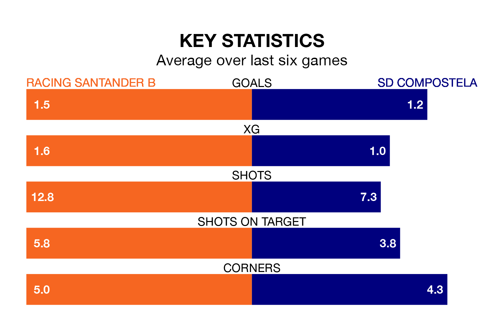

SD Compostela face Racing Santander B on Sunday seeking to protect their long unbeaten run in the Segunda División RFEF Group 1.
Compostela are unbeaten in five, with three wins and two draws, ahead of the 11am kick-off.
They face a Racing Santander B team who have won three and drawn one over the same number of games.
With 47 goals in 33 games so far this season, Racing Santander B are the league's third-highest scorers with 1.4 goals per game. And they are conceding at an average rate, letting in 40 goals at a rate of 1.2 per game.
Compostela, meanwhile, are below average scorers, with 1.0 goal per game, compared to a league average of 1.2. They have conceded 1.1 goals per game.
The hosts are fifth in the table after 33 games, of which they have won 12 and drawn 12, earning 48 points.
The away side are one place behind Racing Santander B in sixth, with 13 wins and eight draws putting them on 47 points.
In the last three years, Racing Santander B and Compostela have played each other on three occasions. Racing Santander B won one of them and Compostela the other.
Their last meeting was on January 7, when Compostela won 3-1 at home.
Racing Santander B's last match was on April 28, a 2-0 win against Covadonga, with Daniel González García and Neco Celorio Garcia getting the goals for Racing Santander B.
Compostela beat Real Avilés 3-1 last time out, also on April 28, with Josep Caballé Martín on the scoresheet.
Updated: 12:00 (UTC), 02/05/24